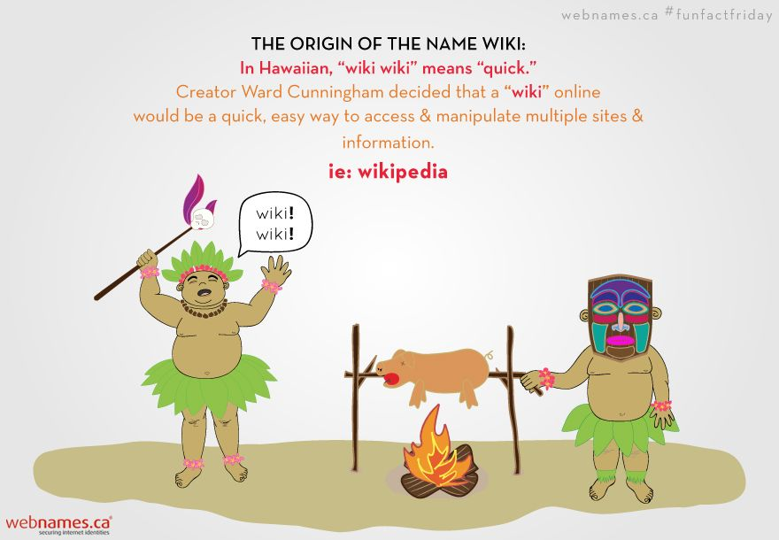
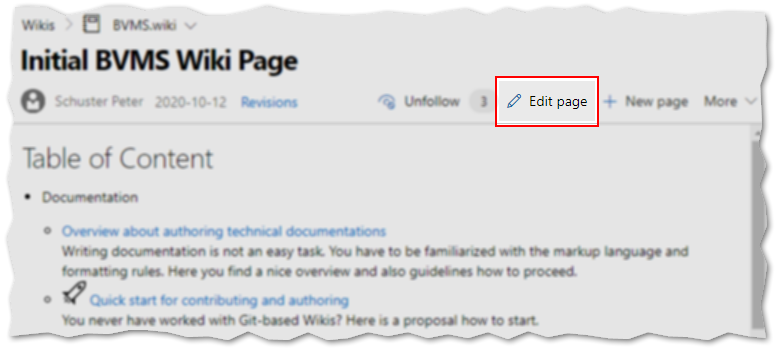
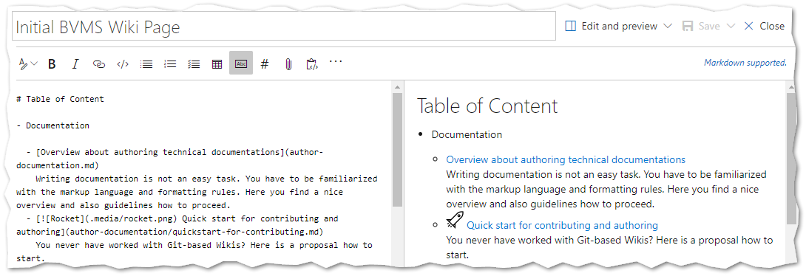
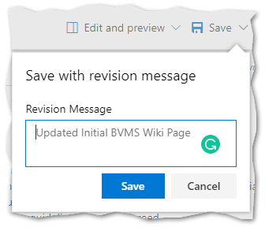
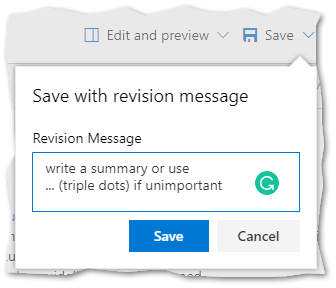
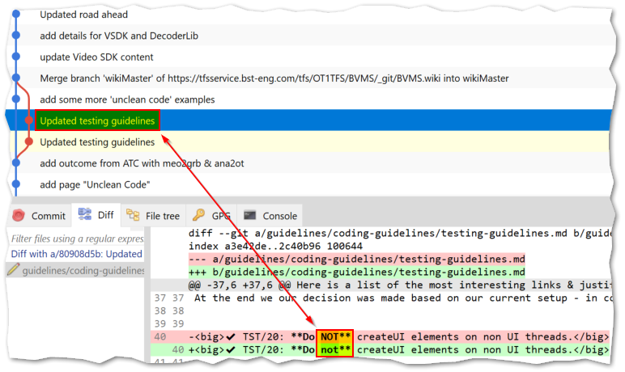
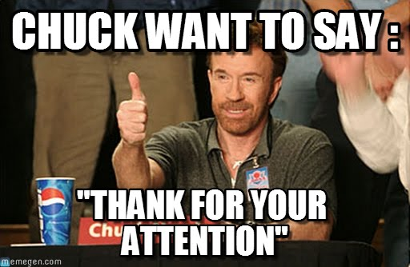

Wiki
Introduction
PoC: MA
Agenda
Etymology

Ward Cunningham (Wiki-innovator)
"The idea of a "Wiki" may seem odd at first, but dive in, explore its links and it will soon seem familiar. "Wiki" is a composition system; it's a discussion medium; it's a repository; it's a mail system; it's a tool for collaboration. We don't know quite what it is, but we do know it's a fun way to communicate asynchronously across the network."
Technical Wiki
- Why we need a technical Wiki?
- Contribution & Permissions
- Wiki platforms
- Why technicians like Markdown/Git-based Wikis
- Facts from the Market
- Comparison to SharePoint & $BVMS_Documents
Why we need a technical Wiki?
code and knowledge are our assets & value
→ persist & spread knowledge to increase it
- collaboratively building documentation
- creating and maintaining knowledge bases
- gathering tacit knowledge
- ...

It is your responsibility as a professional developer
to properly document code and software
that is intended for use by others.
Contribution & Permissions
-
public Wiki: 90-9-1 rule
(90: read, 9: read & edit, 1: read, edit & create) -
enterprise Wiki
contribution level is much higher based on the fact that
people are contributing as part of the daily course of their work
→ ideally: 0-0-100!!! -
everyone full control
but review gates possible (PR)
Wiki platforms
-
specific Wiki systems
(Wikipedia, DokuWiki, MediaWiki, ..) -
collaboration management
(Confluence, SharePoint) -
Nowadays: Lightweight Git/Markdown-based Wikis
(github, BitBucket, Azure Devops, docs.microsoft.com, ..)
Why technicians like Git-based Wikis
- it's handy, it's fast, it's flexible
-
provides all Benefits from a DVCS
- collaboration, online & offline-Editing
- branching, diffing, history
- establish lightweight review processes (PRs)
-
versioned in a context, because commit wraps
- all belonging changes (docs, pics, references)
- the commit message with summary & optional details
Why technicians like Markdown-based Wikis
-
markup language (remember SGML, Latex,…)
- let's focus on content instead presentation
- all pages have the same consistent look & feel
-
it's really fast to write and manage
- limited and easy to remember formatting tags
- without the hassle of remembering lots of HTML tags
- perfect suited for versioning because of text
-
it's modern, it's state of the art, it's fun
at least for the most
-
export options: numberless formats with Pandoc
use case: external documents, like manuals, guidelines, ... -
hoster-flexibility: no vendor lock-in
in seconds we can move to another hoster -
Markdown can be a useful tool for producing clean & professional looking
- research papers, memos, concepts
- blog posts, wikis, discussion forums
- books (online and for printing)
http://www.makeuseof.com/tag/learning-markdown-write-web-faster/
→ btw: this presentation is as well:
written in Markdown and hosted by Git
(and rendered via FsReveal)
Facts from the Market
-
Markdown/Git-based Wikis have crystallized out as a standard
all big players (Microsoft, Atlassian, Github) move to such Wikis - internally and externally -
never ever before we had such a flexibility
- we can replace tools, adjust processes and switch hoster
- but the fundament (Markdown & Git) doesn't need any migration
-
the tool landscape in that area has grown faster than ever before
see: Azure DevOps Server, VSC, Stackoverflow
Comparison to SharePoint
-
SharePoint cannot be a Wiki
Ask your self 🤔
When have I ever had a quick experience with Sharepoint? -
Pessimistic locking blocks others from co-working
perfect sample: Sprint Review Landing page -
Freedom of formatting is simultaneously a hell
nauthors end up inn+xlayouts with lim(x)→∞ -
Mixed content: text + documents
hard to consume, maintain, reference/link -
Restructuring ends often in split check-ins
no chance to understand the history
Comparison to $BVMS_Documents
-
it is more a DMS (document management system)
documents usually contain non-volatile content, but knowledge about the product, project, code is very volatile content
🎓 Remember our methodology: we do AGILE, not waterfall! -
on-boarding process is very annoying and to think about resigning
download document - wait , open it in app - wait, next document
for how many? several hundreds!
Such an experience is since 2015 embarrassing -
What about linking between topics?
at its best to another document, but not the section
Markdown Overview
- Headers (Level 1 till 6)
- Emphasis (italic, bold, italic-bold)
- lists (unordered & ordered)
- References & links (pages, web, pictures)
- Source Code with Syntax Highlighting
Headers
1: 2: 3: 4: |
|
H1
H2
…
H6
Alternatively, for H1 and H2, an underline-ish style:
1: 2: 3: 4: 5: |
|
Alt-H1
Alt-H2
Please don't use this alternative, stay with
#s!
Emphasis
1: 2: |
|
Emphasis, aka italics, with asterisks or underscores.
Strong emphasis, aka bold, with asterisks or underscores.
Lists
1: 2: 3: 4: 5: 6: |
|
- First ordered list item
-
Another item
- Unordered sub-list.
-
Actual numbers don't matter, just that it's a number
- Ordered sub-list
- And another item.
btw: Markdown takes care, regarding numbering
→ use only 1.
References & Links
-
URL-Reference
[text for the link](http-address) -
Link to another page
[text for the link](<filename with ext>) -
Images

Source Code
incl. Syntax-Highlighting
1: 2: 3: 4: 5: 6: |
|
1: 2: 3: 4: |
|
Contribution
- Start Editing
- Editor with Preview (~WYSIWYG)
- Take care of the commit messag
- History & Diffing
Start Editing

Editor with Preview

Take care of the commit message
Default Message |
Specific Message |
|---|---|
 |
 |
doesn't not differentiate whether by coincidence forgotten or really unimportant |
expresses with |
` → reading history can be confusing or can be a clear statement in the history
History & Diffing

Resources
- Wiki
- Markdown
- Which Wikis we have?
Wiki-Links
Markdown-Links
Which Wikis we have?
Wiki |
Content |
|---|---|
in the future: all development relevant content around product BVMS |
|
DevOps topics: CI & CD, pipelines |
|
development knowledge about automated UI tests |
|
technical flavored organizational topics |
|
know how to tools & application |
